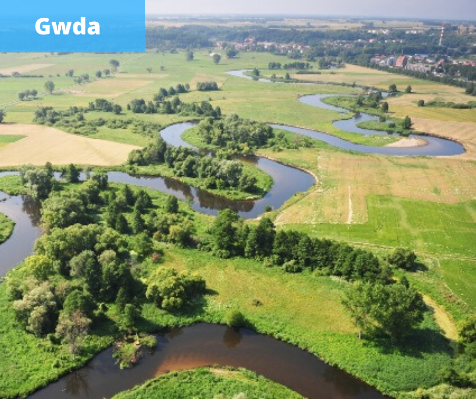
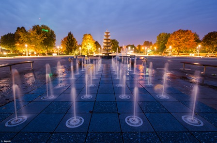
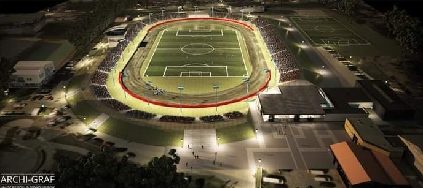

Rzeka Gwda - Gwda jest największym, mierzącym 145,1 km dopływem Noteci. Wypływa z łąk powyżej jeziora Wierzchowo koło Szczecinka, wpada do Noteci w miejscowości Ujście koło Piły.

Wyspa - Południową część parku zajmuje rozległy plac z fontanną i krytą estradą. Latem są tam urządzane koncerty i festyny. W środkowej części wyspy był wybudowany w latach 90. ogród jordanowski z elementami wykonanymi z drewna, zwany "wioską indiańską". W roku 2012 zmieniony w plac zabaw.W północno-zachodniej części parku znajduje się niewielki ogrodzony staw z dwiema wyspami, zasilany wodami Gwdy. Gniazdowały tam liczne gatunki ptactwa wodnego. W V 2013 r. zadbano o nasadzenia z okazji 500-lecia nadania praw miejskich Pile i umieszczono na jednej z wysepek złotą koronę. Wyspa jest połączona z lądem trzema betonowymi kładkami.

Piła wyrosła ze starej rybackiej osady położonej wśród lasów nad rzeką Gwdą. Prawa miejskie otrzymała już prawdopodobnie w XV wieku, zostało to potwierdzone w 1513 r. przez króla Zygmunta Starego. Nie oszczędzały miasta katastrofy i zawieruchy wojenne. W roku 1626 roku miasto doszczętnie spłonęło. Odbudowane, nie oparło się wojskom szwedzkim w czasie Wojny Północnej, a największe zniszczenia przyniosła Wojna Siedmioletnia. Po l rozbiorze Rzeczypospolitej, Piła weszła w skład zaboru pruskiego. W 1755 roku w grodzie nad Gwdą urodził się najwybitniejszy obywatel miasta - Stanisław Staszic. Ten zasłużony przedstawiciel Oświecenia, ksiądz, pisarz, mąż stanu i filozof, zasłynął jako geolog twórca geologicznej mapy Polski.
Po l wojnie światowej Piła pozostała w granicach Rzeszy. W czasie II wojny światowej miasto stało się ważnym ośrodkiem przemysłu zbrojeniowego Niemiec oraz miejscem ewakuacji ludności niemieckiej z bombardowanych przez Aliantów przemysłowych okręgów Rzeszy. Na początku 1945 roku Piła została ogłoszona miastem - twierdzą, wchodząc w skład umocnień Wału Pomorskiego. W wyniku ciężkich walk, Piła legła w gruzach. Była to ostatnia straszliwa klęska w dziejach miasta, które zostało odbudowane, niemal od nowa.
Stadion MOSIR(planowana przebudowa)
